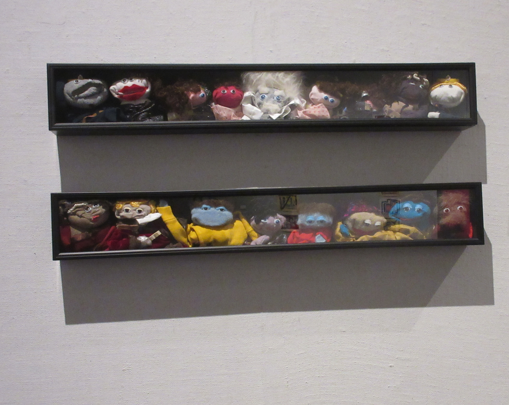

This Was a Gun That He Made/Modified.

This Was a Flyer From The Regina Art Gallery.
This Was His Show Sockvile that He Made as Puppets.

These are his photos of Saskatchewan.

These are His Paintings from Agoraphobia.